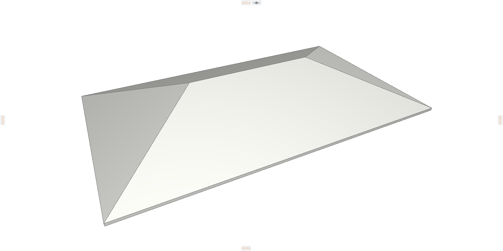
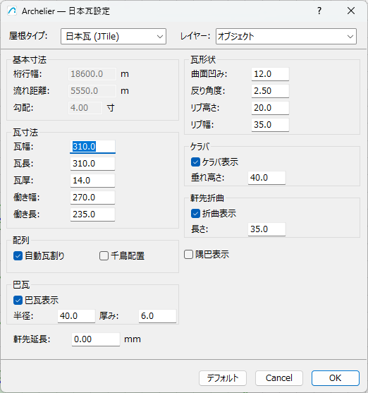
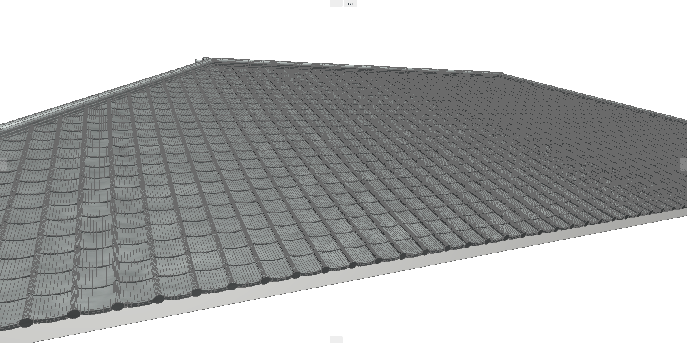
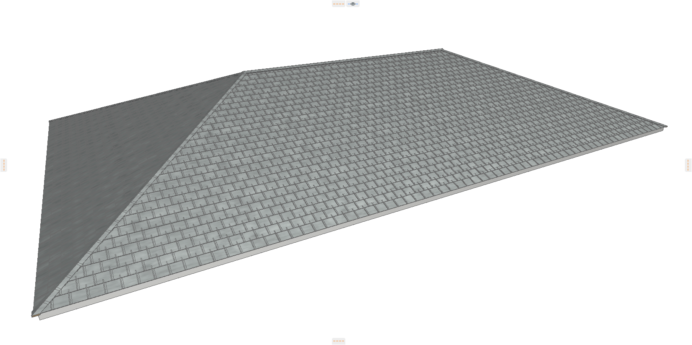
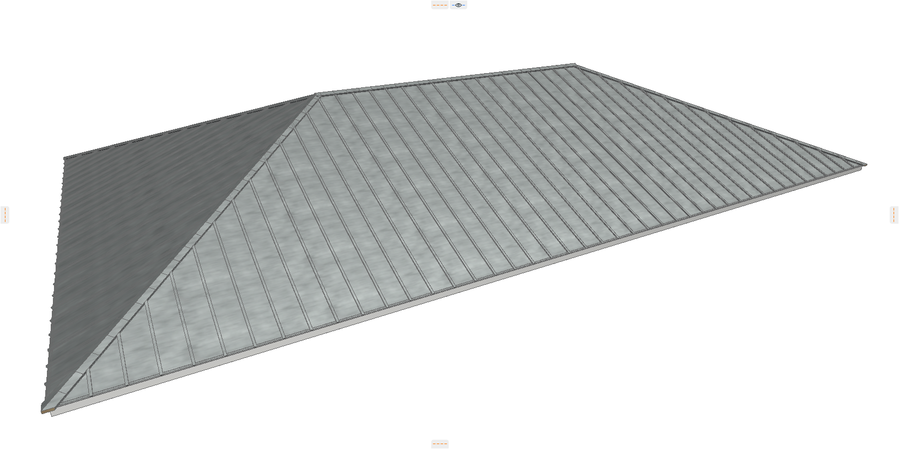
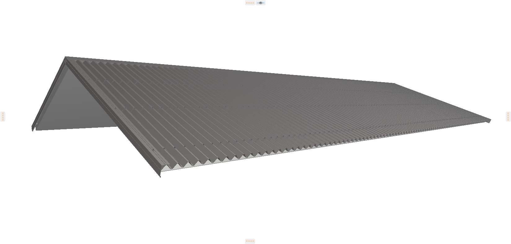
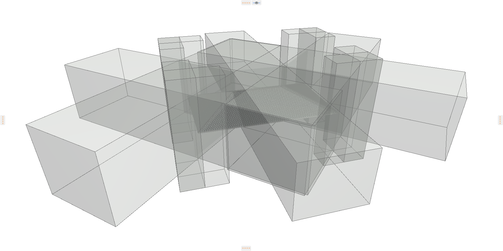
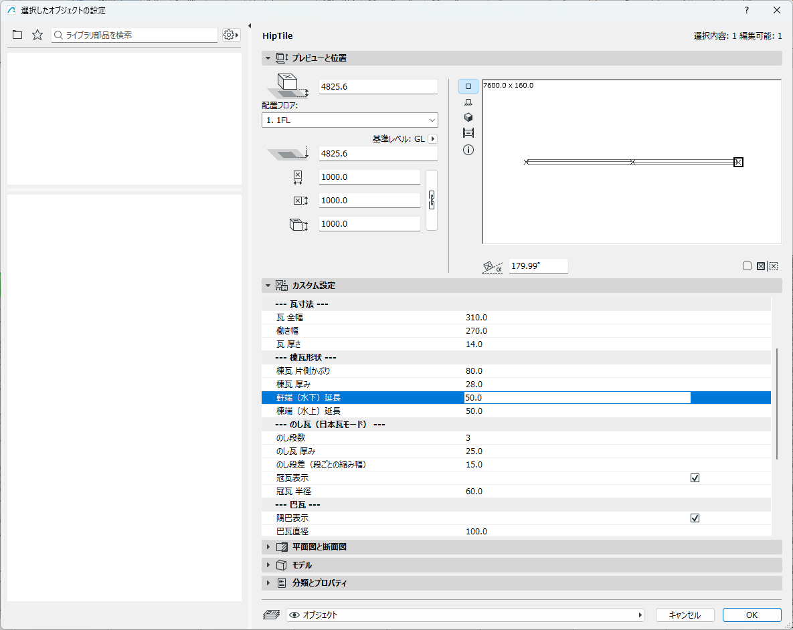
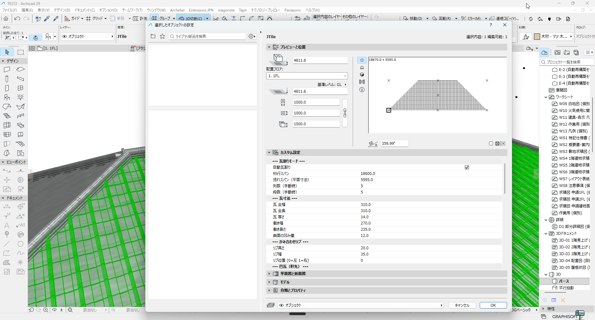

Archelier 使い方ガイドシリーズ、第1弾へようこそ。このシリーズでは、私が開発している ArchiCAD 向けアドオン「Archelier」の具体的な使い方を、機能ごとに詳しく解説していきます。初回となる今回は、設計実務において多くの時間を費やされがちな「屋根の自動配置機能」の概要についてお話しします。基本的な操作フローから、設定ダイアログの各項目が持つ意味まで、この機能の全体像を掴んでいただくことを目的としています。
はじめに — ArchiCAD で屋根瓦をどう作っているか
ArchiCADで建築モデルを作成する中で、屋根の表現、特に瓦屋根のモデリングに頭を悩ませた経験はないでしょうか。私たち設計者は、意匠の検討に集中したいのに、ツールの制約によって単純な作業に時間を奪われることが少なくありません。
例えば、ArchiCADの標準機能で瓦屋根を作ろうとすると、いくつかの方法が考えられます。カーテンウォールを傾けて瓦に見立てる、シェルやモルフで一枚一枚、あるいは面として折板のような形状を作る、といったワークアラウンドです。しかし、どの方法も一長一短があります。カーテンウォールは設定が煩雑で、瓦特有の柔らかな重なりやディテールを表現するには限界があります。シェルやモルフで自作する方法は、単純な折板ならまだしも、日本瓦のような複雑な形状をリアルに作ろうとすれば、膨大な手間と時間が必要です。
そして、こうした手作業の最大の弱点は「設計変更に弱い」ことです。屋根材や勾配を変えるたびに、モデルを大きく作り直すことになります。
設計の初期段階、あるいは中期段階において、屋根のディテール作成にこれほど多くの時間を費やすのは、本質的ではありません。この、いわば「創造性のない作業」から設計者を解放したい。それが、私が Archelier の屋根自動配置機能を開発した出発点です。Archelier は、ArchiCAD の屋根スラブ情報をもとに、瓦や役物を高速に自動配置することで、設計検討のサイクルを加速させることを目指しています。
対応する屋根タイプ4種 と 自動判定
Archelier の大きな特徴の一つは、ArchiCAD で作成した「屋根スラブ」の形状を解析し、それがどのような屋根タイプであるかを自動で判定する機能です。これにより、設計者がわざわざ「これは寄棟です」「これは切妻です」と指定する必要がありません。現在、以下の4種類の基本的な屋根形状に対応しています。
寄棟（Hip）
四方向に勾配を持つ、最も一般的な屋根形式の一つです。Archelier は4つの屋根面（プレーン）から構成される屋根スラブを「寄棟」と判定し、大棟と4本の隅棟を自動で生成します。
切妻（Gable）
二方向に勾配を持つ、シンプルな屋根形式です。2つの屋根面から構成される屋根スラブを「切妻」と判定し、大棟と両端のケラバを適切に処理します。
T字（T-shape）
二つの棟がT字型に交差する屋根形式です。Archelier は屋根面の構成と接続関係から「T字」と判定し、棟の取り合いや谷部分の処理を自動で行います。
L字（L-shape）
建物がL字型の場合に用いられる屋根形式です。T字とは面の接続関係が異なります。Archelier はこれも自動で判別し、入隅部分の複雑な瓦の取り合いを処理します。
この自動判定は、屋根スラブを構成するポリゴンの数や接続関係、すなわち「プレーン」の情報を解析することで実現しています。このため、設計者は ArchiCAD の標準ツールで屋根スラブを作成するだけで、あとは Archelier に任せることができます。各屋根タイプにおける詳細な処理（隅棟の納まり・谷の処理・大棟の取り合いなど）は、次回以降の「瓦タイプ別 使い方ガイド」、特に HipTile（棟役物） の回で集中的に解説していきます。
対応する瓦タイプ5種
Archelier では、設計の要求に応じて使い分けられるよう、5種類の屋根材タイプを用意しています。これらは単なるテクスチャではなく、すべて3D オブジェクトとして生成されるため、リアルな陰影やディテールを表現できます。
JTile（日本瓦・和瓦）
伝統的な和風建築で用いられる、優美な曲線を持つ瓦です。棟部分には「のし瓦」や「冠瓦」も表現でき、本格的な和風建築のモデリングに適しています。
FlatTile（平板瓦）
シンプルでモダンな印象を与える、平らな形状の瓦です。現代的な住宅デザインで広く採用されており、すっきりとした屋根面を表現したい場合に選択します。
HipTile（隅棟瓦・棟役物）
寄棟・切妻・T字・L字といった屋根タイプを判定したときに、Archelier が自動的に大棟・隅棟へ配置する棟役物のオブジェクトです。JTile / FlatTile / MetalRoof のいずれを選んだ場合でも、必要に応じて HipTile が一緒に生成され、屋根タイプごとに適切な軒先延長・大棟延長の値が自動で割り当てられます。
MetalRoof（金属屋根・ガルバリウム鋼板の縦葺き等）
ガルバリウム鋼板などの金属板を使った縦葺き屋根を表現します。シャープで工業的なデザインや、ミニマルな建築表現と相性が良いです。
FoldedRoof（折板屋根）
工場や倉庫、カーポートなどで一般的に見られる、山形に折り曲げられた金属屋根です。断面形状の高さや幅もパラメータで調整可能です。
基本操作フロー
Archelier の屋根配置機能の操作は、非常にシンプルです。ここでは、基本的な操作の流れをご紹介します。
1. ArchiCAD で屋根スラブを準備する
まず、ArchiCAD の標準ツールである「屋根ツール」を使い、配置したい屋根の形状を作成します。この時点では、まだ単なるスラブ（板）で構いません。勾配や軒の出など、基本的な形状をここで決定します。

2. Archelier の屋根配置メニューを起動する
作成した屋根スラブを 3D ビューまたは平面図ビューで選択した状態で、上部メニューから Archelier の屋根配置機能を起動します。
3. 瓦タイプを選び、パラメータを確認して実行
設定ダイアログが開きます。ここで、先ほど紹介した瓦タイプから目的のものを選びます。各パラメータには一般的な初期値が設定されているため、まずは何も変更せずに「OK」ボタンを押してみてください。

屋根タイプ・瓦寸法・巴瓦・ケラバなど、必要なパラメータがこの1画面に集約されている。
4. 配置完了
実行は一瞬です。単なる板だった屋根スラブの上に、ディテール豊かな瓦屋根が 3D オブジェクトとして生成されているのが確認できるはずです。

このフローの最大の利点は、設計検討のスピードが格段に向上することです。例えば、同じ一つの屋根スラブに対して、瓦タイプを「JTile」にして実行すれば和瓦案が、「FlatTile」にすれば平板瓦案が、「MetalRoof」にすれば金属屋根案が、それぞれ即座に完成します。これにより、施主へのプレゼンテーションや所内でのデザインレビューにおいて、具体的なビジュアルを伴った複数の選択肢を迅速に比較検討することが可能になります。



瓦タイプを切り替えるだけで、住宅瓦から工業用の折板まで同じフローで配置できる。
屋根スラブの輪郭でカットする — SEO カッターの仕組み
Archelier で屋根瓦を配置すると、寄棟や L 字型といった複雑な屋根形状でも、輪郭に沿ってきれいに瓦がカットされることにお気づきかと思います。ここでは、その内部的な仕組みについて、少しだけ種明かしをさせてください。
実は、Archelier は最初から瓦を一枚ずつ屋根形状に合わせて生成しているわけではありません。内部では、ArchiCAD の基本機能である SEO（Solid Element Operations） を応用しています。具体的には、以下のステップで処理を行っています。
- 1. 瓦の仮配置: まず、屋根スラブ全体を覆うように、瓦を単純な矩形パターンで敷き詰めます。この時点では、瓦は屋根スラブの輪郭からはみ出した状態です。
- 2. カッターの自動生成: 次に、屋根スラブの輪郭情報をもとに、はみ出した瓦を切り取るための「見えない箱（ソリッド）」を自動で生成します。これを私は「SEO カッター」と呼んでいます。
- 3. 自動トリミング: 最後に、この SEO カッターを「オペレータ」、瓦群を「ターゲット」としてソリッド編集の「減算」を実行し、屋根の輪郭からはみ出した部分を正確にカットします。
下の図は、その処理の様子を可視化したものです。

通常、これらのカッターは専用の非表示レイヤーに配置されるため、設計者の目に触れることはありません。
この「一旦大きく配置して、後から輪郭でカットする」という仕組みは、私たち設計者にとって大きなメリットをもたらします。一つは、寄棟・切妻・T字・L字といった屋根形状を問わず、一貫した方法で正確に瓦を配置できることです。
そしてもう一つの重要な点は、設計変更への追従性です。屋根スラブの形状や勾配を後から変更しても、ソリッド編集の関連付けは維持されます。そのため、瓦は新しい屋根形状に自動で追従し、面倒な再配置作業は一切不要になります。
ダイアログ各項目の意味
Archelier の真価は、詳細なパラメータ設定によるカスタマイズ性の高さにあります。この基本操作を崩さず変更ができることに重きを置き設計しました。ここでは、設定ダイアログの主要な項目がそれぞれ何を意味し、どのようにモデルに影響するのかを解説します。初期値のままでも十分に機能しますが、より意図した表現に近づけるために、これらのパラメータを理解しておくことをお勧めします。
基本寸法（桁行幅・流れ距離・勾配）
これらの値は、選択した ArchiCAD の屋根スラブから自動で取得される、屋根の基本的な寸法情報です。桁行幅は棟に平行な方向の長さ、流れ距離は軒先から棟までの長さ、勾配は屋根の傾きを指します。基本的にユーザーが手動で編集する必要はなく、C++ で自動取得します。
瓦寸法（瓦幅・瓦長・瓦厚・働き幅・働き長）
瓦一枚あたりの寸法を定義する項目です。
- 瓦幅・瓦長・瓦厚: 瓦全体の物理的なサイズです。
- 働き幅・働き長: 瓦を葺いた際に、隣接する瓦との重なり部分を除いた、実際に表面に見える部分の寸法です。屋根全体の瓦の割り付けは、この「働き寸法」を基準に行われます。使用する瓦メーカーの製品カタログなどに記載されている値を入力することで、より現実に近いモデリングが可能になります。
瓦形状（曲面の凹み量・反り角度・リブ高さ・リブ幅）
瓦の断面形状や細部のディテールを調整するパラメータです。
- 曲面の凹み量: JTile（日本瓦）の表面に見られる波形の深さを調整します。値を大きくすると、瓦一枚あたりのカーブが強調され、より重厚な和瓦の表情になります。
- 反り角度: JTile（日本瓦）などで、瓦の軒先側の反りを表現します。角度を大きくすると、より優美な曲線を描きます。
- リブ高さ・リブ幅: FlatTile（平板瓦）の表面に立ち上がる縦リブの寸法を定義します。瓦の意匠性を左右する細部で、メーカーや製品ごとに異なる平板瓦の表情を再現できます。
棟瓦（表示有無・かぶり長・棟瓦厚）
屋根の頂部である大棟や隅棟に関する設定です。
- 表示有無: 棟瓦を生成するかどうかを切り替えます。
- かぶり長: 棟瓦が平瓦にどれだけ被さるかの長さを調整します。
- 棟瓦厚: 棟瓦自体の厚みを設定します。
ケラバ（表示有無・垂れ高さ）
切妻屋根の端部（妻側）の処理を定義します。
- 表示有無: ケラバ役物（袖瓦など）を生成するかどうかを切り替えます。
- 垂れ高さ: ケラバ役物が屋根面からどれだけ垂れ下がるかを設定します。
唐草（表示有無・立上げ高・かぶり長）
軒先やケラバの端部に設置される板金部材（唐草）の表現をコントロールします。
- 表示有無: 唐草を生成するかどうかを切り替えます。
- 立上げ高・かぶり長: 唐草の断面形状に関する寸法です。
配列（自動瓦割り・千鳥配置・軒先延長）
瓦全体の並べ方を制御する重要な項目です。
- 自動瓦割り: このチェックを入れると、屋根の寸法に合わせて働き幅を自動で微調整し、半端な瓦が出ないようにきれいに割り付けてくれます。
- 千鳥配置: FlatTile（平板瓦）などで、上下の列の瓦を半分ずつずらして配置する「千鳥葺き」を再現します。
- 軒先延長: 軒先部分の出寸法を調整します。MetalRoof（金属屋根）と FoldedRoof（折板屋根）でのみ有効なパラメータです。
これらのパラメータを組み合わせることで、一般的な住宅の屋根から特殊な納まりまで、幅広い表現に対応することができます。
配置後のパラメータ再調整
Archelier の便利な点は、一度屋根を配置した後でも、パラメータを後から再調整できることです。
配置後に生成された瓦屋根オブジェクトを選択し、ArchiCAD 標準の「選択したオブジェクトの設定」パネルを開いてみてください。すると、Archelier の専用パラメータが「カスタム設定」として表示され、後から値を変更することができます。

ここで調整できるのは、たとえば次のような項目です。
- 軒端（水下）延長 / 棟端（水上）延長: 棟瓦の葺き始めと葺き終わりの位置を微調整します。
- のし段数: 棟に積み上げる「のし瓦」の段数を変更できます。段数を増やすことで、より重厚な印象の棟を表現できます。
- 冠瓦表示: 棟の最上部に載せる「冠瓦」の表示/非表示を切り替えます。
- 巴瓦表示: 隅棟や大棟の端部に取り付ける「巴瓦」の表示/非表示を切り替えます。

これらの変更は、ダイアログの値を変えると即座に 3D ビューに反映されます。屋根全体を再生成する必要はありません。「のし瓦は3段にしてみようか」「やはり5段の方が風格が出るか」といった細部のデザイン検討を、ストレスなくインタラクティブに行うことができます。
一度配置したら終わり、ではなく、配置後も継続的にモデルを修正できる柔軟性。これも、私が設計ツールに求める重要な要素であり、Archelier に実装したかった機能の一つです。
次回以降の予告 — 瓦タイプ別 使い方ガイド
今回は、Archelier の屋根自動配置機能の概要として、基本的な考え方、対応する屋根タイプ・瓦タイプ、そして操作フローについて解説しました。この記事を通して、この機能がどのような思想で開発され、設計者のどのような課題を解決しようとしているのか、その一端を感じていただけたなら幸いです。
ただし、概要編だけでは「実際に自分の設計で、どの瓦タイプを選んで、どう設定すればいいのか」という最も大事な疑問にまでは踏み込めませんでした。そこで次回以降は、Archelier が対応する 5種類の瓦タイプ を一つずつ取り上げ、選び方・パラメータの意味・設計実務での使いどころを、瓦タイプ別の使い方ガイドとして連載していきます。
- 第2弾：FlatTile（平板瓦）編 — シンプルで導入しやすい平板瓦。段差・千鳥配置・色味の調整など、基本パラメータの読み方
- 第3弾：JTile（日本瓦・和瓦）編 — Archelier の真骨頂。桟瓦のディテール、丸み、伝統的な意匠への対応
- 第4弾：HipTile（棟役物）編 — 大棟・隅棟の自動配置。寄棟・切妻・T字・L字それぞれの屋根形状で 同じ HipTile がどう振る舞いを変えるか、その分岐処理に踏み込みます（前回触れられなかった隅棟・谷・入隅処理はすべてここに集約）
- 第5弾：MetalRoof（金属屋根・縦葺き）編 — ガルバリウム鋼板の立平。シャープな現代住宅・ミニマル建築への適用
- 第6弾：FoldedRoof（折板屋根）編 — 工業建築・倉庫・カーポートで使う山形パネル。住宅瓦との設計フロー共通化
「自分の物件にはどの瓦タイプが合うのか」「ダイアログのこのパラメータは何を意味するのか」といった、実務で必ず出てくる疑問に答える形で、一本ずつ丁寧に書いていきます。
Archelier の屋根機能の詳細は 機能紹介ページ をご覧ください。